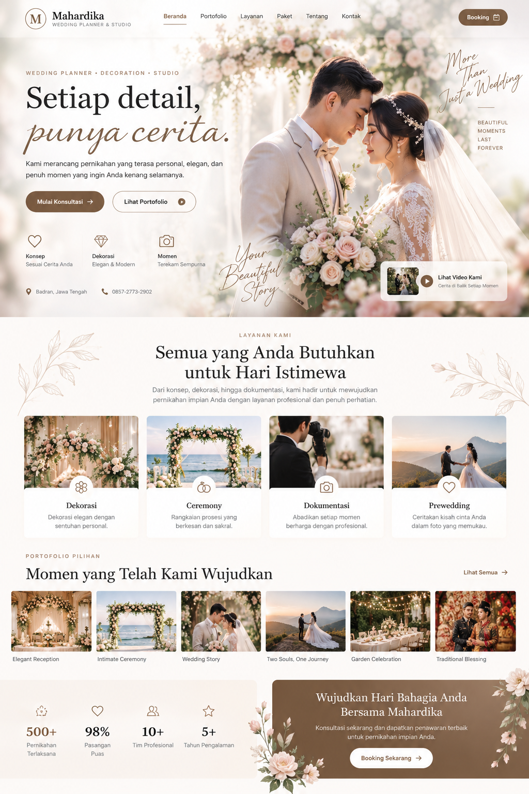

★★★★★
“Dari awal konsultasi sampai hari H, tim Mahardika bener-bener telaten dengerin kemauan kami. Dekorasi bunganya wangi dan fresh banget, rundown acara juga rapi tanpa bikin keluarga capek.”
WEDDING PLANNER • DECORATION • STUDIO
Kami membantu merancang pernikahan yang personal, hangat, elegan, dan terasa ringan dari awal persiapan hingga hari H terlaksana.

Pasangan Berbahagia
Pengalaman Wedding di Jateng
Vendor Terkurasi & Andal
Tingkat Kepuasan Klien
MAHARDIKA WEDDING
Setiap pasangan membawa kepribadian dan impian unik. Kami tidak menyajikan konsep template yang kaku. Kami memulai dari mendengarkan kisah Anda, lalu menyelaraskan dekorasi, vendor, alur adat, timeline, dan koordinasi lapangan agar momen paling sakral dalam hidup Anda terasa tenang dan berkesan mendalam.
Pelajari alur layanan kami →LAYANAN UTAMA
Konsep yang cantik, proses persiapan yang menenangkan, dan hari H yang bisa dinikmati seutuhnya bersama keluarga.
— Mahardika Wedding Planner & Studio
PORTOFOLIO TERPILIH
CERITA KLIEN
Kesan jujur dari pasangan yang mempercayakan hari sakralnya bersama Mahardika.
“Dari awal konsultasi sampai hari H, tim Mahardika bener-bener telaten dengerin kemauan kami. Dekorasi bunganya wangi dan fresh banget, rundown acara juga rapi tanpa bikin keluarga capek.”
“Acara adat Jawa panggih dan kacar-kucur dipandu dengan sangat khidmat oleh tim WO Mahardika. Orang tua kami sangat puas dan lega karena semua vendor sinkron dengan sempurna.”
“Budget kami transparan tanpa ada biaya mengejutkan di belakang. Hasil fotonya sinematik dan dekorasinya persis seperti moodboard visual yang kami setujui saat meeting awal!”
TANYA JAWAB
Temukan jawaban seputar alur kerja, konsep dekorasi, pendampingan vendor, dan sistem booking bersama Mahardika Wedding Planner & Studio.
Waktu ideal untuk memulai konsultasi adalah 6 hingga 12 bulan sebelum hari H untuk paket Full Wedding Planning. Rentang waktu ini memberikan keleluasaan optimal dalam mengamankan venue/gedung favorit, mengurasi vendor prioritas, dan mematangkan konsep visual tanpa terburu-buru.
Namun bagi Anda yang memiliki jadwal lebih dekat (3–6 bulan) atau hanya memerlukan Wedding Organizer (Hari H), tim kami tetap siap mendampingi selama kuota tanggal masih tersedia.
Kami menerapkan 5 tahapan kerja terstruktur yang transparan dan menenangkan:
Tentu saja. Kami mengedepankan fleksibilitas sesuai kebutuhan spesifik Anda. Anda dapat memilih layanan terpisah seperti:
Tim kami memiliki jam terbang tinggi dalam mendampingi tata cara prosesi pernikahan adat Jawa tradisional (seperti Siraman, Midodareni, Pasang Tarub, Ijab Qobul, Balang Gantal, Panggih, Kacar-Kucur, dan Sungkeman) dengan tetap menjaga kesakralan pakem budaya leluhur.
Di saat yang sama, kami mahir mengemasnya dalam balutan estetika kontemporer, resepsi modern minimalis, maupun intimate garden celebration yang hangat dan abadi.
Ya, ini adalah salah satu keunggulan utama kami. Kami tidak memaksakan paket kaku. Pada sesi awal, kami akan membantu menyusun budget breakdown yang realistis dan transparan, memprioritaskan pos-pos penting, serta mencarikan opsi vendor berkualitas yang selaras dengan alokasi dana Anda tanpa biaya tersembunyi.
Kantor dan workshop kami berpusat di Badran, Kranggan - Pringsurat, Jawa Tengah. Wilayah operasional rutin kami mencakup Temanggung, Magelang, Wonosobo, Ambarawa, Salatiga, Semarang, dan D.I. Yogyakarta.
Untuk lokasi perayaan di kota lain di Jawa Tengah atau luar daerah, kami sangat terbuka untuk mendiskusikan akomodasi dan penyesuaian logistik tim.
Sistem pembayaran dirancang bertahap untuk mempermudah perencanaan finansial Anda:
Pasti. Pendampingan menyeluruh adalah komitmen kami. Tim kami akan mendampingi Anda langsung ke lokasi (gedung, hotel, aula, atau kediaman pribadi) untuk meninjau arus lalu lintas tamu (guest flow), tata panggung, daya listrik & pencahayaan, serta memimpin sesi Technical Meeting (TM) bersama keluarga dan vendor mitra.
Ceritakan impian, tanggal rencana, dan perkiraan jumlah tamu. Tim kami siap berdiskusi hangat dan memberikan solusi terbaik.
SIAP MEMULAI?
Ceritakan tanggal, lokasi, dan konsep yang Anda impikan. Kami akan bantu menyusun langkah berikutnya dengan terstruktur dan tenang.